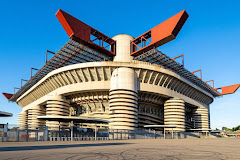

Стадіон
Стадіон Джузе́ппе Меа́цца (італ. Stadio Giuseppe Meazza), відоміший як Сан-Сі́ро (італ. San Siro) — футбольний стадіон у Мілані, Італія. Домашня арена двох із трьох найуспішніших італійських клубів: «Мілана» та «Інтернаціонале». Один з найвідоміших футбольних стадіонів у світі. Споруду названо на честь Джузеппе Меацци, футболіста «Інтера» 1930-х—1940-х років, одного з найкращих голеадорів в історії італійського чемпіонату та збірної Італії з футболу. Незважаючи на це, найширшого вжитку отримала історична назва «Сан-Сіро». Стадіон має дуже крутий схил трибун і великий дах, що дозволяє створювати на ньому неповторну атмосферу при заповненні верхніх рядів.
Біографія стадіона
Стадіон побудовано у 1925 році в окрузі Сан-Сіро, який дав назву споруді. Ідея побудови належала президенту «Мілана» П'єро Піреллі. Архітектор спланував стадіон виключно для футбольних матчів (на ньому немає легкоатлетичних доріжок). Відкриття стадіону відбулося 19 вересня 1926 року матчем «Інтер»—«Мілан», у якому номінальні господарі перемогли 6:3. На початку стадіон належав лише «Мілану» і був лише його домашньою ареною. У «1947» році «Інтернаціонале» отримало право власності на стадіон і з тих часів Сан-Сіро є ареною для двох команд. Хоча Джузеппе Меацца грав як за «Інтер», так і за «Мілан», але найуспішніші матчі він провів за «Інтернаціонале» і був відданий саме цій команді. Тому фанати «Мілану» називають стадіон виключно його історичною назвою «Сан-Сіро». Стадіон також використовують для ігор національної збірної. У 1965, 1970 та 2001 році Сан-Сіро приймав фінальні матчі Ліги чемпіонів (або Кубку європейських чемпіонів). Також на стадіоні проводився один з раундів фінального матчу за Кубок УЄФА, коли структура турніру ще була двоматчевою, яку замінили на одну гру у сезоні 1997—98. У 1989 році стадіон було реконструйовано для проведення матчів чемпіонату світу з футболу 1990 року. Вартість перебудови склала приблизно 60 млн. доларів США, і зараз стадіон має п'ятизірковий статус за оцінкою УЄФА. Було збільшено кількість сидячих місць до 80 018 завдяки трибунам, які збудували на трьох сторонах стадіону. Це викликало побудову 11 бетонних башт на зовнішній частині споруди. Чотири з них розташовані у кутах будівлі та тримають масивний дах, який має відмітні червоні балки.